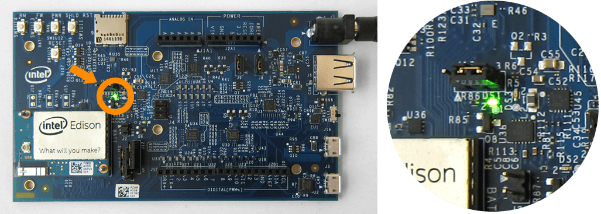

-
Plug in a 7 to 15 VDC input DC power supply to the barrel connector.
(This DC power supply could be plugged into the wall, or be part of a battery pack.)
-
A green LED should light up on the expansion board. Wait one minute for the Intel® Edison to finish booting up.

When using DC power, if you do not need the device mode cable for programming, you can unplug it at this time. Same for the serial cable.